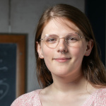
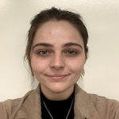

LGT4HEP - Students
Current Traineeship Students
Genessa Benton(she/her)
Department of Physics
University of Illinois Urbana-Champaign
Genessa is a first year graduate student studying physics at UIUC. She is interested in doing precision calculations with lattice QCD, and is involved in the theory initiative for the muon anomalous magnetic moment. Outside of physics, she enjoys tennis, Pokémon, and her cat Julie.

Akhil Chauhan (he/him)
Department of Physics
University of Illinois Urbana-Champaign
Akhil is a graduate student at the University of Illinois pursuing a PhD in physics. His work focuses on high precision determinations using lattice QCD, such as CKM matrix elements from semileptonic decays and the strong coupling at the Z pole. In his free time, Akhil enjoys book clubs, cooking new dishes, and physical activities with his friends.

Alex NieMiera (she/her)
Department of Physics and Astronomy
Michigan State University
Alex is a first year graduate student pursuing her PhD in physics at Michigan State University, and she is also interested in pursuing the dual PhD degree in computational mathematics, science, and engineering. She enjoys volunteering for events hosted by the Women and Minorities in the Physical Sciences at MSU to help build community within the physics department and hopes to contribute more on this front in the coming years. For her long-term career goals, she hopes to work at a National Lab one day, focusing on research while mentoring student interns. In her free time, she enjoys restoration projects, reading classic literature, and her two cats.

Sherry Wang (she/her)
Department of Physics
University of Maryland, College Park
Sherry is a first-year physics PhD student at the University of Maryland, College Park. As a member of Professor Zohreh Davoudi's research group, she is studying the applications of quantum thermodynamics to high energy physics. The goal of her current project is to show that local and non-local formulations of gauge theory give rise to the same thermodynamic quantities. As an undergraduate at Northwestern University, she also worked with Dr. Joshua Isaacson and Professor André de Gouvêa to improve the identification of tau neutrino events using the ACHILLES lepton-nucleus event generator. Broadly, her research interests include the applications of novel computational tools, such as quantum computing and machine learning, to fundamental physics.
Hersh Kumar (he/him)
Department of Physics
University of Maryland, College Park
Hersh is a first year graduate student at the University of Maryland, pursuing a PhD in Physics. He is interested in the application of classical and quantum computing to nuclear and high energy physics. In his spare time, Hersh enjoys playing guitar and reading fantasy novels.
Jonas Hildebrand
Department of Physics
University of Connecticut
Jonas is a second year graduate student at the University of Connecticut pursuing a PhD in physics, and he is specifically interested in both analytic and computational particle physics. Jonas received a B.S. in physics with a philosophy minor from Whitworth university in Spokane, Washington. Jonas enjoys Olympic lifting, skiing, and soccer in his free time.
Jake Sitison
Department of Physics
University of Colorado, Boulder
Jake is a graduate student at the University of Colorado Boulder where he received his MS in Applied Mathematics and is now working toward his PhD in Physics. He is interested in doing precision calculations with lattice QCD and is currently studying the anomalous magnetic moment of the muon with the Fermilab-MILC Collaboration. In his free time, he is an avid rock climber and a mediocre skier.
Past Traineeship Students (2023-2024)
Ryan Abbott (he/him)
Department of Physics
Massachusetts Institute of Technology
Ryan wass a 5th year graduate student studying physics at MIT. Ryan's research interests lie broadly within lattice QCD and hadronic physics, including projects studying dense QCD through systems of many mesons, and adapting novel methods from machine learning to lattice QCD.
Bill Good (he/him)
Department of Physics and Astronomy
Michigan State University
Bill wass a second-year graduate student and an awardee of Michigan State University Distinguished Fellowship in 2022.
He is interested in pursuing in dual PhD degree with Computational Mathematics, Science and Engineering at MSU.
Bill serves on the graduate curriculum committee in the MSU Physics department and as the treasurer for the Women and Minorities in the Physical Science at MSU.
Bill hopes to one day be a professor at a university, inspiring future generations of physicists. Outside of physics and service, he enjoys mixed martial arts, music, and his two cats.
This traineeship is sponsored by DOE HEP Computing traineeship